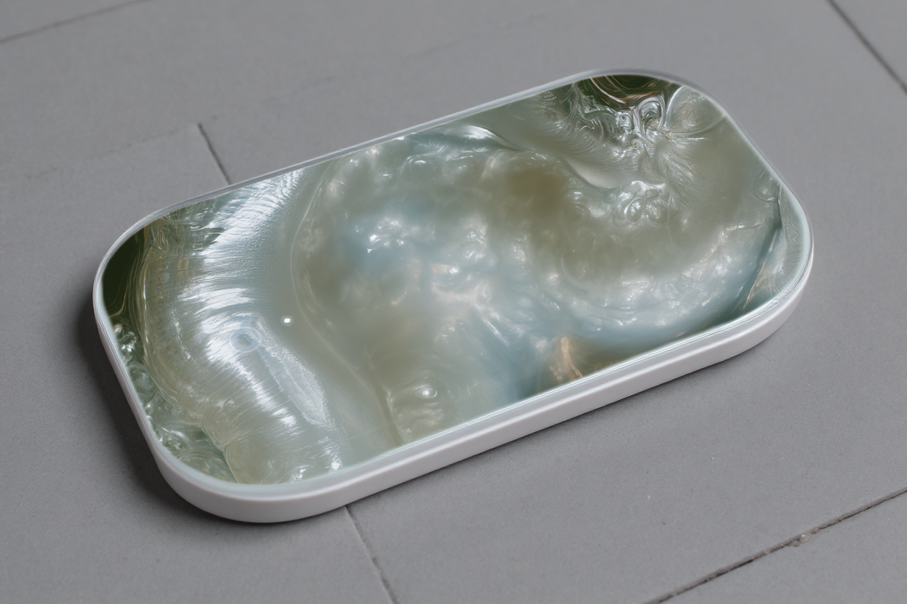

01
Aftertone
Design Research · Moving Image · Speculative Object
ResearchMoving ImageInteractive
Selected Works
A selection of projects combining AI-assisted image-making, brand systems, moving image, creative technology, and spatial experience.